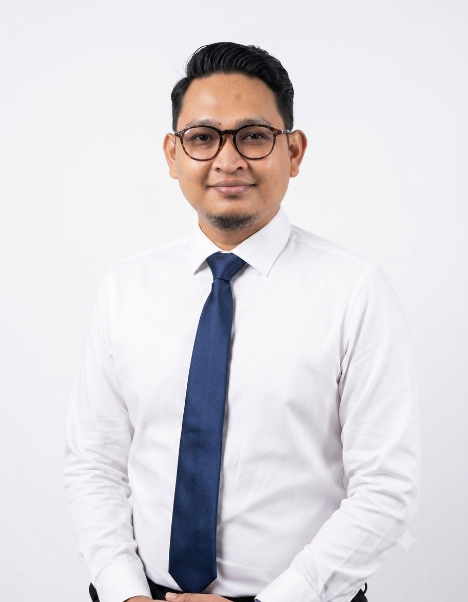

Memimpin proyek IT di PT. Kita Indonesia Plus dengan mengelola seluruh fase *Software Development Life Cycle* (SDLC). Terbukti menyampaikan 98% solusi sukses tepat waktu dan sesuai anggaran melalui manajemen risiko yang terukur.

98%
On-Time & Budget Delivery
End-to-End
SDLC Execution
Cross-Functional
Team Leadership
PT. Kita Indonesia Plus • Jakarta, Indonesia
Proyek Utama:
PT. Intelligent Systems Solutions • Jakarta, Indonesia
Proyek Utama:
PT. Shan Informasi Sistem • Jakarta, Indonesia
Proyek Utama:
PT. Sinar Baru Electric • Jakarta, Indonesia
Proyek Utama:
CV. Maju Jaya Utama • Jakarta, Indonesia
SDLC Planning, Agile & Waterfall, Task Prioritization, Resource Allocation, Roadmap Development, Scrum Master.
Business Process Analysis, Systems Analysis, Risk Management & Mitigation, Data Analytics, Query Optimization (SQL).
API Documentation, Postman, Hoppscotch, Figma, Jira, Trello, Taiga, Miro, MS SQL Server, MySQL, PostgreSQL, Cloud Management.
Google • Coursera
Professional Certificate melingkupi 7 kursus: Foundations, Initiation, Planning, Execution, Agile PM, Capstone, dan AI Job Search.
Amazon Web Services (AWS)
Pemahaman dasar konsep AI Generatif, model bahasa besar, dan penerapannya pada infrastruktur cloud AWS (360 Menit).
Alibaba Cloud DataWorks
Sertifikasi pengolahan dan analisis data skala besar menggunakan platform Alibaba Cloud DataWorks.
Digital Talent Scholarship - KOMINFO
Program pelatihan kompetensi analisis data nasional dari Kementerian Komunikasi dan Informatika RI.
Terbuka untuk kolaborasi proyek IT, konsultasi sistem, dan peluang profesional lainnya.